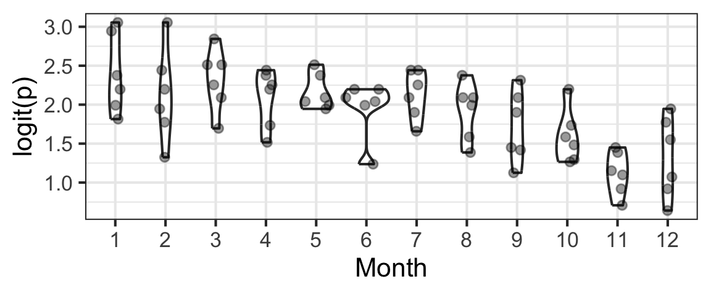

30 Binary Regression Another Way: Multiple Trials Per Row
30.1 Module Learning Outcomes
We continue our work on binary regression this module, but add a second possible data set-up: multiple-trials-per-row data.
By the end of the module you will:
- Interpret logistic regression coefficients in terms of odds ratios
- Examine a dataset and determine whether a given response variable is…count data, one-trial-per-row binary data, or multiple-trials-per-row binary data
- Gain practice and confidence in carrying out the whole modelling process (plan/explore, fit, assess, and select/interpret) for binary data – in either the one-trial-per-row or multiple-trials-per-row format
30.2 Text Reference
Recommended reading for the materials covered in this tutorial can be found in:
- Beyond Multiple Linear Regression Chapter 6
- Course Notes Chapter 9
- Regression Modeling Strategies Chapters 10-11
It’s suggested that you consider consulting these chapters after doing this tutorial, with particular focus on any topics you found most challenging.
30.3 Binary regression: Data with more than one trial per row
So far, the dataset we used for binary regression had one “trial” per row: there was a categorical variable in the dataset with two categories, “success” and “failure” (for the frogs: Abnormal and Normal). We wanted to estimate the probability of “success” as a function of several predictors.
If there are multiple trials that all have the same predictor-variable values, we can group them together into one row of data, and just record the number of “trials” and the number of “successes”. (From this, we can also get the number of “failures” = “trials” - “successes”, if needed.) If we have a dataset that is stored in this format, we can still use glmmTMB() to fit a binary regression model. The R code to fit the model changes just a bit, and we are able to do better model assessment a bit more easily.
An example follows.
30.4 Data
The dataset used here is a reality-based simulated EIA dataset on duck sightings before and after wind farm installation (impact). Hourly, observers did up to 200 scans of the study area, and for each scan recorded whether duck(s) were seen (a success) or not (a failure).
The data file can be accessed online at:
https://sldr.netlify.app/data/EIApropdata.csv
duck_eia <- read_csv('https://sldr.netlify.app/data/EIApropdata.csv',
show_col_types = FALSE)glimpse(duck_eia)Rows: 72
Columns: 6
$ successes <dbl> 172, 190, 191, 184, 191, 175, 185, 189, 181, 170, 183, 184, …
$ trials <dbl> 200, 200, 200, 200, 200, 200, 200, 200, 200, 200, 200, 200, …
$ day <dbl> 7, 13, 27, 3, 20, 24, 15, 20, 22, 10, 13, 21, 2, 5, 18, 8, 1…
$ month <dbl> 1, 1, 1, 2, 2, 2, 3, 3, 3, 4, 4, 4, 5, 5, 5, 6, 6, 6, 7, 7, …
$ impact <dbl> 0, 0, 0, 0, 0, 0, 0, 0, 0, 0, 0, 0, 0, 0, 0, 0, 0, 0, 0, 0, …
$ failures <dbl> 28, 10, 9, 16, 9, 25, 15, 11, 19, 30, 17, 16, 17, 15, 22, 22…30.5 Checking the data setup
We would like to model the proportion scans with ducks sighted as a function of a set of covariates. Each row of our dataset gives us the number of successes in some number of trials (and also gives the corresponding values of the covariates for ALL those trials). We can also use this kind of summary data with a logistic regression; we will just need to add a column for the number of failures:
duck_eia <- duck_eia |>
mutate(failures = trials - successes)30.6 Dataset Size (\(\frac{m}{15}\))
Maybe you noticed this dataset has only 72 rows and started wondering how many parameters we can afford to estimate. Good thinking! You might have the \(frac{n}{15}\) rule-of-thumb in mind.
But…remember, it’s more complicated than that!
We need to find the number of successes and failures observed, and divide the smaller of those by 15, to get the estimate of the number of parameters we may be able to estimate.
Or…maybe not…maybe we’d like to have about 15 successes-or-failures-whichever-is-rarer for each combination of categorical predictors…that is, for each row of data…if we want to include them all? There’s not a clear consensus on how to think about “sample size” in this case.
Consider the exploration below to help you decide: if you wanted, could you include day, month, and impact? All as categorical, or some or all quantitative? There are a quite a few judgment calls here and the choices can matter…but by all measures suggested, this dataset is actually pretty “large” after all.
30.7 Fitting a model
Let’s try fitting a model for proportion sightings as a function of day, month, and impact.
We need a response “variable” that is really 2 variables bound together: a column with the “successes” and a column with the “failures”.
These don’t have to be literally called successes and failures – you can use whatever variable names you like or are already present in your data – but the first one of the two should be successes (the thing you want to compute the proportion for) and the second failures.
In the model formula, cbind() binds together two columns from the dataset to characterize the response variable.
Two models are proposed below. Which one would you use? Why [do I argue] that duck_logit_model2 is a better choice?
30.8 Checking linearity
What should be linear here?
Well, logit(p) (where p is the probability of success, for a given set of predictor-variable values) should be a linear function of the predictors.
We can actually check this graphically now that we have multiple trials per row of data! (But remember that the effects of other, unplotted predictors may also be influencing the plot that you see…)
Here, we need to consider: Do we see a linear pattern (or no pattern)? Either is fine!
It’s a nonlinear trend that would cause concern.
For the month and day data here, we might also consider whether it would make more sense to fit either of them as a categorical predictor rather than numeric.
(Numeric assumes a monotonic relationship: as the month number, for example, increases, the chance of “success” steadily increases or decreases – probably with a sharp, stark change as we cross over from 12 (December) to 1 (January). That seems silly, right? That’s why I suggested that the model with categorical month was “better” conceptually…)
Several plots are shown below. Consider: which ones work better visually? Which ones correspond to considering day and month as categorical vs. numeric?
gf_point(logit(successes/trials) ~ day, data = duck_eia) |>
gf_labs(y = 'logit(p)')gf_point(logit(successes/trials) ~ month, data = duck_eia) |>
gf_labs(y = 'logit(p)') |>
gf_lims(x = c(1, 12))gf_boxplot(logit(successes/trials) ~ factor(day),
data = duck_eia, orientation = "x") |>
gf_labs(y = 'logit(p)', x = 'Day Number')gf_violin(logit(successes/trials) ~ factor(month), data = duck_eia)|>
gf_sina(alpha = 0.4) |>
gf_labs(y = 'logit(p)', x = 'Month')
30.9 Model Assessment
With data set up as proportions (many trials with the number of successes and failures in each row, rather than one row per trial), traditional model assessment plots are a bit more useful. Specifically, we could check the Pearson residuals vs. fitted plot for constant variance as a function of fitted value, to confirm that the mean-variance relationship matches what we expect. (Since the Pearson residuals are already adjusted for the expected variance, we should see approximately constant spread, with values ranging from about -2 to 2 (and not more than a few larger than \(\pm\) 3.))
However, we can also continue to use our scaled residual plot, interpreting it as we have for count and binary one-trial-per-row data…
duck_sim <- simulateResiduals(duck_logit_model2)
plotResiduals(duck_sim, quantreg = FALSE)What do you think? It’s neither fantastic (conditions clearly met) nor terrible (definitely unmet).
Linearity
For linearity (already checked in an easier-to-understand way above with the data plots), we don’t really see a clear linear or nonlinear trend here, so there’s no evidence of a problem in the scaled residual plot.
Mean-variance relationship
If the mean-variance condition is met, then the scaled residuals will be spread uniformly in the vertical (up-and-down) dimension.
Here there seems to be a little bit of clumping at the top and bottom near transformed predicted values of 0.2-0.4 and a “bald spot” at the bottom near 0.6, but the number of points is not that large so this is probably OK.
We don’t have strong evidence of a problem with the mean-variance condition.
Residual Independence
acf(resid(duck_logit_model2), main = '')
This ACF plot helps us check the residual independence condition. All the ACF values for lags greater than 1 are well within the confidence band, so we have no evidence of dependence in the residuals (at least in the dataset’s current sort order). This condition seems to be met.
Overall
We found no evidence of problems with any conditions, so our model passed assessment and we can expect it to produce valid conclusions. (Assuming the data itself was collected in an appropriate way and doesn’t contain lies!)
30.10 Model Selection
We can do model selection as usual. Here, it looks like the best model is the saturated (full) model.
Imagine we wanted to know if exposure to the environmental potential disturbance, impact, was affecting duck presence (controlling for daily and seasonal changes). We might do:
We might also try using model selection to help us decide whether to use quantitative or categorical month and/or day…we know there’s some influence, and want to choose the formulation that fits the data best, using “parameter estimating power” most efficiently.
Here it looks like day as quantitative and month as categorical works best. Can you use update() and BIC() to show this is true?
duck_mod_both_cat <- update(duck_logit_model2, . ~ . -day + factor(day))
duck_mod_day_cat <- update(duck_logit_model, . ~ . -day + factor(day))
BIC(duck_logit_model, duck_logit_model2, duck_mod_both_cat, duck_mod_day_cat)30.11 Conclusion
- Here, our model passed assessment, so we can draw conclusions based on it and expect them to be valid (yay).
- Model selection showed that our key predictor,
impact, really was associated with the response in some way.
Wait – how so? It is not super helpful to know that wind farm construction or operation affects duck presence, but then not know if the ducks are there more or less often!
summary(duck_logit_model2) Family: binomial ( logit )
Formula: cbind(successes, failures) ~ day + factor(month) + impact
Data: duck_eia
AIC BIC logLik -2*log(L) df.resid
580.7 612.6 -276.4 552.7 58
Conditional model:
Estimate Std. Error z value Pr(>|z|)
(Intercept) 2.618402 0.123703 21.167 < 2e-16 ***
day -0.011735 0.004058 -2.892 0.003829 **
factor(month)2 -0.297341 0.135092 -2.201 0.027734 *
factor(month)3 -0.014290 0.141766 -0.101 0.919711
factor(month)4 -0.287870 0.135761 -2.120 0.033971 *
factor(month)5 -0.258361 0.141491 -1.826 0.067851 .
factor(month)6 -0.404561 0.132914 -3.044 0.002336 **
factor(month)7 -0.141972 0.139208 -1.020 0.307799
factor(month)8 -0.452316 0.132295 -3.419 0.000628 ***
factor(month)9 -0.632855 0.128257 -4.934 8.05e-07 ***
factor(month)10 -0.665992 0.129788 -5.131 2.88e-07 ***
factor(month)11 -1.136006 0.123840 -9.173 < 2e-16 ***
factor(month)12 -0.949485 0.127996 -7.418 1.19e-13 ***
impact -0.223631 0.048515 -4.609 4.04e-06 ***
---
Signif. codes: 0 '***' 0.001 '**' 0.01 '*' 0.05 '.' 0.1 ' ' 1The \(\beta\) for impact is negative. The values of impact are 0 (for none) and 1 (for impact is present). (We could have treated impact as officially categorical, although the mathematical result is equivalent.)
So, we think maybe when impact is present the chances of seeing ducks go down.
By how much, we’d have to use odds ratios or think quite hard…OR just make a quick prediction plot!
Aaah, now we see the value of these plots better!
Bu we also see the downside of lazily not forcing impact to be categorical.
All numerical results will be the same if we change it, but we’ll get a more interpretable plot that doesn’t suggest that impact can actually vary continuously between 0 and 1.
(We could also plot the predict_response()) output by hand to do this, but it’s probably easier/less code to simply update the model.)
(It could look even better if instead of using factor() on the fly we changed the original dataset at the start to make impact a categorical variable, maybe even with informative values instead of numeric coding…but that is left as an exercise for you!)
Now that we have the prediction plot, we can conclude that impact is associated with the probability of duck presence; the evidence we have in our dataset says that we’d expect the probability of ducks being present to go down by about 1.5% in the presence of impact.
So, a difference that is pretty consistent and detectable, but small in absolute terms: instead of being seen 91.5 or so percent of the time, they will be seen about 90% of the time. If we wanted to emphasize that, we might even show our prediction plot with a y axis extending from 0-100%:
predict_response(duck_logit_model2b, 'impact') |>
plot() |>
gf_labs(title = '',
y = 'Probability of Duck Presence') |>
gf_lims(y = c(0,1))Scale for y is already present.
Adding another scale for y, which will replace the existing scale.Yikes - we lost some of the pretty y axis formatting as percentages, and the error bars are still there but invisible because we’ve zoomed out so far! So, still some work to be done, but food for thought in terms of how to present results. Can you make the plot even better? I did the “percents” thing for you, but what else would you alter? Give it a try…
30.12 Summary
We’ve now seen examples of fitting a binary regression model to data with “one trial per row” or “multiple trials per row” – those terms are just something invented for our course, but they do describe the two common data setups that are possible for binary data.
Why do we need both?
Well, if you use data already collected by someone else, sometimes it will come to you in one format, and sometimes the other.
If you know basic data wrangling, it’s not hard to switch between them.
But you may want to keep the data in the format it comes in! Data fitted to the same dataset in one-trial-per-row format and multiple-trials-per-row format will yield the exact same parameter estimates. But model selection results will not always be identical, due to nuances in the way that sample size is determined in each case.
If someone set up the data with multiple trials per row, often that means that they think of all the trials in a row as a unit or group of some kind, and so it might make sense to respect that.
Another key take-away from this module is that if binary data is in a multiple-trials-per-row setup, you can easily mistake it for count data! You’ll notice a column associated with the response variable that has non-negative integer values in it and think, “count data”! But it isn’t!
How can you tell which is which and not be fooled?
In multiple trials per row binary data, there is a known, definite number of trials. That is, you always know the maximum number of “successes” (that is, the max variable value) for a given row. For example, if you watched 14 sites and marked whether ducks were sighted at each one, you might have “success” in spotting ducks at up to 14 of them and never more.
In true count data, there is no “ceiling” to the total counts that might be observed. If you are counting how many ducks you see in an hour, it might be really unlikely, but theoretically you could see any huge number of ducks. There is no set number of “trials” in which you could succeed in seeing ducks (or not); you just count as many as you see with no upper limit.
Generally, if you fit a count regression to binary data or a binary regression to count data, there will be problems with model assessment. So, look carefully to make sure what type of response variable you really have, and choose a model to match!